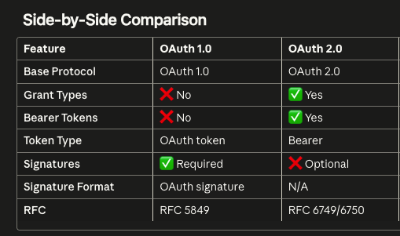
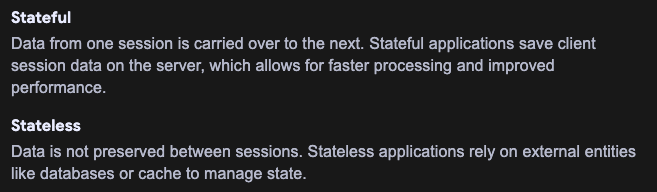
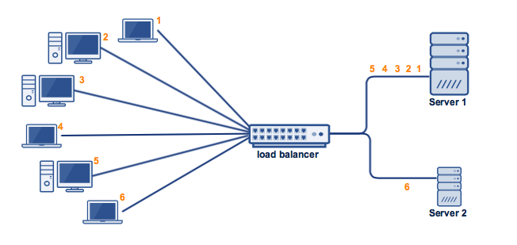
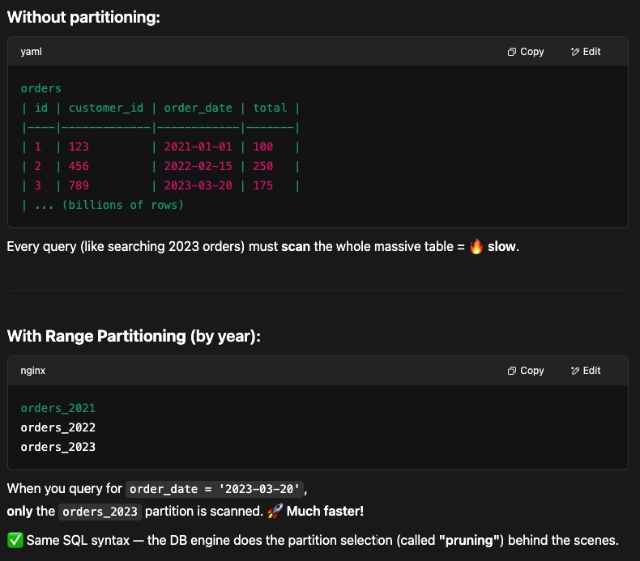
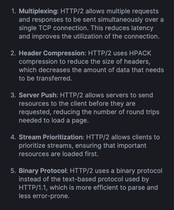
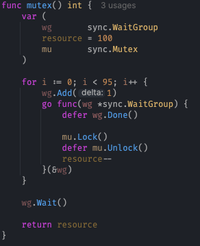
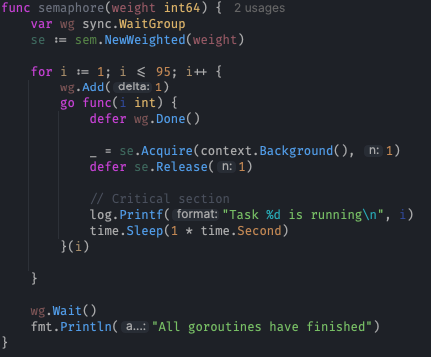
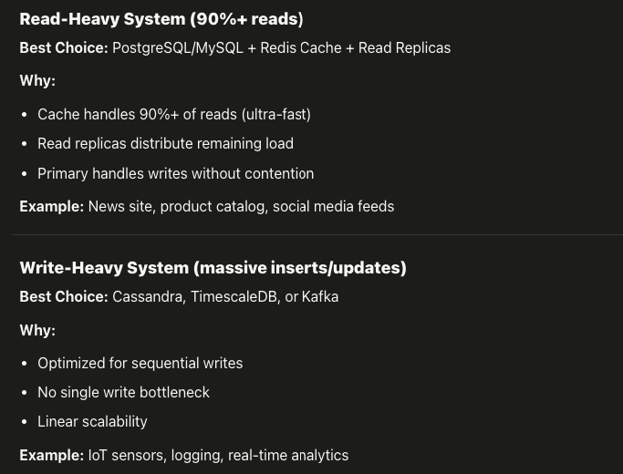
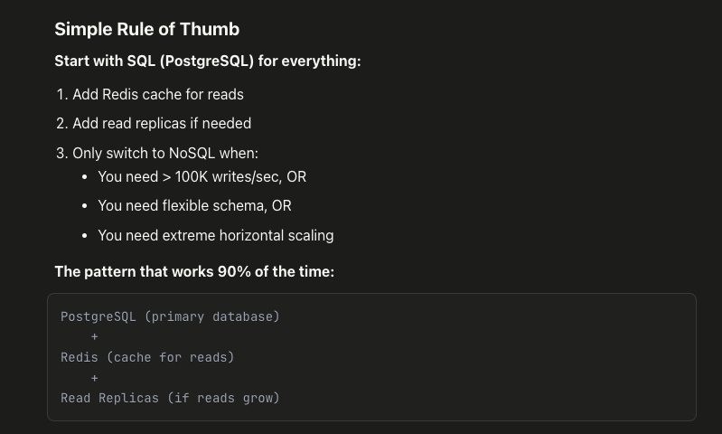

The System Design Primer
Learn how to design large-scale systems. Master the concepts, trade-offs, and patterns used by top engineers at the world's largest tech companies.
Performance vs Scalability
A service is scalable if it results in increased performance in a manner proportional to resources added. Generally, increasing performance means serving more units of work, but it can also be to handle larger units of work, such as when datasets grow.
If you have a performance problem, your system is slow for a single user.
If you have a scalability problem, your system is fast for a single user but slow under heavy load.
🚀 Performance
System is slow even for a single user. You need to optimize the code, queries, or hardware.
📈 Scalability
System is fast for one user but degrades under load. You need to distribute the work across more resources.
Latency vs Throughput
⏱️ Latency
The time to perform some action or to produce some result.
📦 Throughput
The number of such actions or results per unit of time.
Generally, you should aim for maximal throughput with acceptable latency.
Availability vs Consistency
CAP Theorem

In a distributed computer system, you can only support two of the following guarantees:
- Consistency — Every read receives the most recent write or an error
- Availability — Every request receives a response, without guarantee that it contains the most recent version
- Partition Tolerance — The system continues to operate despite arbitrary partitioning due to network failures
Networks aren't reliable, so you'll need to support partition tolerance. You'll need to make a software tradeoff between consistency and availability.
CP vs AP
CP Consistency + Partition Tolerance
Waiting for a response from the partitioned node might result in a timeout error. CP is a good choice if your business needs require atomic reads and writes.
AP Availability + Partition Tolerance
Responses return the most readily available version of the data, which might not be the latest. AP is a good choice if the business needs allow for eventual consistency.
Consistency Patterns
With multiple copies of the same data, we are faced with options on how to synchronize them so clients have a consistent view of the data.
Weak Consistency
After a write, reads may or may not see it. A best effort approach is taken.
This approach is seen in systems such as memcached. Weak consistency works well in real time use cases such as VoIP, video chat, and realtime multiplayer games.
Eventual Consistency
After a write, reads will eventually see it (typically within milliseconds). Data is replicated asynchronously.
This approach is seen in systems such as DNS and email. Eventual consistency works well in highly available systems.
Strong Consistency
After a write, reads will see it. Data is replicated synchronously.
This approach is seen in file systems and RDBMSes. Strong consistency works well in systems that need transactions.
Weak
Best effort. Good for VoIP, games.
Eventual
Reads catch up eventually. Good for DNS, email.
Strong
Immediate consistency. Good for file systems, RDBMS.
Availability Patterns
There are two complementary patterns to support high availability: fail-over and replication.
Fail-over
Active-passive
With active-passive fail-over, heartbeats are sent between the active and the passive server on standby. If the heartbeat is interrupted, the passive server takes over the active's IP address and resumes service.
The length of downtime is determined by whether the passive server is already running in 'hot' standby or whether it needs to start up from 'cold' standby. Only the active server handles traffic.
Active-active
In active-active, both servers are managing traffic, spreading the load between them. If the servers are public-facing, the DNS would need to know about the public IPs of both servers.
- Fail-over adds more hardware and additional complexity
- Potential for loss of data if the active system fails before newly written data can be replicated
Fail-over Types
Cold
Secondary is not running until fail-over. Longer downtime but simpler.
Warm
Secondary is partially active — can take over quickly after failure.
Hot
Fully active and synchronized — near-instantaneous fail-over with minimal downtime.
Replication
Discussed further in the Database section — Master-slave and Master-master replication.
Availability in Numbers
Availability is often quantified by uptime as a percentage of time the service is available. Availability is generally measured in number of 9s.
~43m downtime/month
~4m downtime/month
~26s downtime/month
Availability in parallel vs in sequence
In sequence: Overall availability decreases when two components with availability < 100% are in sequence:
Availability (Total) = Availability (Foo) * Availability (Bar)If both Foo and Bar each had 99.9% availability, their total availability in sequence would be 99.8%.
In parallel: Overall availability increases when two components with availability < 100% are in parallel:
Availability (Total) = 1 - (1 - Availability (Foo)) * (1 - Availability (Bar))If both Foo and Bar each had 99.9% availability, their total availability in parallel would be 99.9999%.
Domain Name System (DNS)

A Domain Name System (DNS) translates a domain name such as www.example.com to an IP address.
DNS is hierarchical, with a few authoritative servers at the top level. Lower level DNS servers cache mappings, which could become stale due to DNS propagation delays. DNS results can be cached by your browser or OS for a certain period of time, determined by the time to live (TTL).
DNS Record Types
- NS record (name server) — Specifies the DNS servers for your domain/subdomain
- MX record (mail exchange) — Specifies the mail servers for accepting messages
- A record (address) — Points a name to an IP address
- CNAME (canonical) — Points a name to another name or to an A record
DNS Routing Methods
Services such as CloudFlare and Route 53 provide managed DNS services. Some DNS services can route traffic through various methods:
- Weighted round robin — Balance between varying cluster sizes, A/B testing
- Latency-based — Route to the lowest-latency endpoint
- Geolocation-based — Route based on user location
- Accessing a DNS server introduces a slight delay (mitigated by caching)
- DNS server management is complex, generally managed by governments, ISPs, and large companies
- DNS services can be targets of DDoS attacks
Content Delivery Network (CDN)

A CDN is a globally distributed network of proxy servers, serving content from locations closer to the user. Generally, static files such as HTML/CSS/JS, photos, and videos are served from CDN, although some CDNs support dynamic content.
- Users receive content from data centers close to them
- Your servers do not have to serve requests that the CDN fulfills
📤 Push CDN
Receive new content whenever changes occur on your server. You take full responsibility for providing content, uploading directly to the CDN and rewriting URLs to point to the CDN.
Best for Sites with a small amount of traffic or content that isn't often updated.
📥 Pull CDN
Grab new content from your server when the first user requests the content. A TTL determines how long content is cached.
Best for Sites with heavy traffic, as traffic is spread out more evenly.
- CDN costs could be significant depending on traffic
- Content might be stale if it is updated before the TTL expires
- CDNs require changing URLs for static content to point to the CDN
Load Balancer

Load balancers distribute incoming client requests to computing resources such as application servers and databases. In each case, the load balancer returns the response from the computing resource to the appropriate client.
Load balancers are effective at:
- Preventing requests from going to unhealthy servers
- Preventing overloading resources
- Helping to eliminate a single point of failure
Additional Benefits
- SSL termination — Decrypt incoming requests and encrypt server responses so backend servers don't have to
- Session persistence — Issue cookies and route a specific client's requests to the same instance
Layer 4 vs Layer 7 Load Balancing
Layer 4 Transport Layer
Looks at info at the transport layer to decide how to distribute requests. Involves source, destination IP addresses, and ports in the header, but not the contents of the packet. Forwards network packets to and from the upstream server.
Faster Requires less time and computing resources.
Layer 7 Application Layer
Looks at the application layer to decide how to distribute requests. Can involve contents of the header, message, and cookies. Terminates network traffic, reads the message, makes a load-balancing decision, then opens a connection.
More Flexible Can direct traffic based on content type.
Horizontal Scaling
Load balancers can also help with horizontal scaling, improving performance and availability. Scaling out using commodity machines is more cost efficient and results in higher availability than scaling up a single server on more expensive hardware (Vertical Scaling).
- Scaling horizontally introduces complexity and involves cloning servers
- Servers should be stateless: they should not contain any user-related data like sessions or profile pictures
- Sessions can be stored in a centralized data store (database or persistent cache like Redis)
- Downstream servers need to handle more simultaneous connections as upstream servers scale out
- The load balancer itself can become a performance bottleneck
- A single load balancer is a single point of failure; configuring multiple increases complexity
Reverse Proxy (Web Server)

A reverse proxy is a web server that centralizes internal services and provides unified interfaces to the public. Requests from clients are forwarded to a server that can fulfill it before the reverse proxy returns the server's response to the client.
Additional Benefits
- Increased security — Hide information about backend servers, blacklist IPs, limit connections per client
- Increased scalability and flexibility — Clients only see the reverse proxy's IP, allowing you to scale servers freely
- SSL termination — Decrypt incoming requests so backend servers don't have to
- Compression — Compress server responses
- Caching — Return the response for cached requests
- Static content — Serve static content directly (HTML, CSS, JS, images, videos)
Load Balancer vs Reverse Proxy
- Deploying a load balancer is useful when you have multiple servers
- A reverse proxy can be useful even with just one web server
- Solutions such as NGINX and HAProxy can support both layer 7 reverse proxying and load balancing
Application Layer

Separating out the web layer from the application layer allows you to scale and configure both layers independently. The single responsibility principle advocates for small and autonomous services that work together.
Microservices
Microservices can be described as a suite of independently deployable, small, modular services. Each service runs a unique process and communicates through a well-defined, lightweight mechanism to serve a business goal.
Pinterest, for example, could have the following microservices: user profile, follower, feed, search, photo upload, etc.
Service Discovery
Systems such as Consul, Etcd, and Zookeeper can help services find each other by keeping track of registered names, addresses, and ports. Health checks help verify service integrity and are often done using an HTTP endpoint.
- Adding an application layer with loosely coupled services requires a different approach from an architectural, operations, and process viewpoint
- Microservices can add complexity in terms of deployments and operations
Database

Relational Database Management System (RDBMS)
A relational database like SQL is a collection of data items organized in tables.
- Atomicity — Each transaction is all or nothing
- Consistency — Any transaction will bring the database from one valid state to another
- Isolation — Executing transactions concurrently has the same results as if executed serially
- Durability — Once a transaction has been committed, it will remain so
There are many techniques to scale a relational database: master-slave replication, master-master replication, federation, sharding, denormalization, and SQL tuning.
Master-Slave Replication

The master serves reads and writes, replicating writes to one or more slaves, which serve only reads. If the master goes offline, the system can continue to operate in read-only mode until a slave is promoted to a master.
- Additional logic is needed to promote a slave to a master
- Potential for loss of data if the master fails before newly written data can be replicated
- More read slaves = more replication lag
Master-Master Replication

Both masters serve reads and writes and coordinate with each other on writes. If either master goes down, the system can continue to operate with both reads and writes.
- You'll need a load balancer or change application logic to determine where to write
- Most master-master systems are either loosely consistent or have increased write latency
- Conflict resolution becomes more complex as more write nodes are added
Federation

Federation (or functional partitioning) splits up databases by function. For example, instead of a single, monolithic database, you could have three databases: forums, users, and products, resulting in less read and write traffic to each database.
- Not effective if your schema requires huge functions or tables
- You'll need to update application logic to determine which database to read and write
- Joining data from two databases is more complex
Sharding

Sharding distributes data across different databases such that each database can only manage a subset of the data. As the number of users increases, more shards are added to the cluster.
Common ways to shard a table of users is either through the user's last name initial or the user's geographic location.
- You'll need to update application logic, resulting in complex SQL queries
- Data distribution can become lopsided (e.g., power users on one shard)
- Rebalancing adds additional complexity
- Joining data from multiple shards is complex
Denormalization
Denormalization attempts to improve read performance at the expense of some write performance. Redundant copies of the data are written in multiple tables to avoid expensive joins.
In most systems, reads can heavily outnumber writes 100:1 or even 1000:1. A read resulting in a complex join can be very expensive.
- Data is duplicated
- Constraints can help redundant copies stay in sync, increasing complexity
- Under heavy write load, might perform worse than normalized counterpart
SQL Tuning
It's important to benchmark and profile to simulate and uncover bottlenecks.
- Tighten up the schema — Use
CHARinstead ofVARCHARfor fixed-length fields,TEXTfor large blocks,DECIMALfor currency - Use good indices — Columns that you query (SELECT, GROUP BY, ORDER BY, JOIN) could be faster with indices
- Avoid expensive joins — Denormalize where performance demands it
- Partition tables — Break up a table by putting hot spots in a separate table
- Tune the query cache — In some cases, the query cache could lead to performance issues
NoSQL
NoSQL is a collection of data items represented in a key-value store, document store, wide column store, or a graph database. Data is denormalized, and joins are generally done in the application code.
- Basically available — the system guarantees availability
- Soft state — the state may change over time, even without input
- Eventual consistency — the system will become consistent over time
| Type | Abstraction | Examples | Best For |
|---|---|---|---|
| Key-value | Hash table | Redis, Memcached | Simple data, caching, fast lookups |
| Document | Key-value with documents | MongoDB, CouchDB | Flexible schema, occasionally changing data |
| Wide column | Nested map | Cassandra, HBase, Bigtable | Very large data sets, high availability |
| Graph | Graph | Neo4j, FlockDB | Complex relationships (social networks) |
SQL or NoSQL?

Choose SQL
- Structured data with strict schema
- Relational data, complex joins
- Transactions required
- Clear patterns for scaling
- Lookups by index are very fast
Choose NoSQL
- Semi-structured, dynamic schema
- Non-relational data
- Store TB/PB of data
- Very high throughput (IOPS)
- Data-intensive workload
Cache

Caching improves page load times and can reduce the load on your servers and databases. Popular items can skew the distribution, causing bottlenecks. Putting a cache in front of a database can help absorb uneven loads and spikes in traffic.
Types of Caching
| Cache Type | Description |
|---|---|
| Client caching | Located on the client side (OS or browser) |
| CDN caching | CDNs are considered a type of cache |
| Web server caching | Reverse proxies and caches (Varnish) can serve static and dynamic content directly |
| Database caching | Database usually includes some level of caching in default config |
| Application caching | In-memory caches (Memcached, Redis) between your application and data storage |
Caching Levels
There are multiple levels you can cache that fall into two general categories: database queries and objects:
- Row level
- Query-level — Hash the query as a key and store the result
- Fully-formed serializable objects
- Fully-rendered HTML
Cache-Aside

The application is responsible for reading and writing from storage. The cache does not interact with storage directly.
def get_user(self, user_id):
user = cache.get("user.{0}", user_id)
if user is None:
user = db.query("SELECT * FROM users WHERE id = {0}", user_id)
if user is not None:
key = "user.{0}".format(user_id)
cache.set(key, json.dumps(user))
return user- Each cache miss results in three trips, causing noticeable delay
- Data can become stale if updated in the database (mitigated by TTL)
- When a node fails, new empty node increases latency
Write-Through

The application uses the cache as the main data store, reading and writing data to it, while the cache is responsible for reading and writing to the database:
def set_user(user_id, values):
user = db.query("UPDATE Users WHERE id = {0}", user_id, values)
cache.set(user_id, user)Write-through is a slow overall operation due to the write operation, but subsequent reads of just written data are fast. Data in the cache is not stale.
Write-Behind (Write-Back)

The application adds/updates entry in cache and asynchronously writes entry to the data store, improving write performance.
- Potential for data loss if the cache goes down before contents hit the data store
- More complex to implement than cache-aside or write-through
Refresh-Ahead

You can configure the cache to automatically refresh any recently accessed cache entry prior to its expiration. Refresh-ahead can result in reduced latency if the cache can accurately predict which items are likely to be needed.
Asynchronism

Asynchronous workflows help reduce request times for expensive operations. They can also help by doing time-consuming work in advance, such as periodic aggregation of data.
Message Queues
Message queues receive, hold, and deliver messages. If an operation is too slow to perform inline:
- An application publishes a job to the queue, then notifies the user of job status
- A worker picks up the job from the queue, processes it, then signals completion
| Tool | Pros | Cons |
|---|---|---|
| Redis | Simple message broker | Messages can be lost |
| RabbitMQ | Popular, AMQP protocol | Requires managing own nodes |
| Amazon SQS | Hosted, managed | High latency, possible duplicate delivery |
Task Queues
Tasks queues receive tasks and their related data, runs them, then delivers their results. They can support scheduling and can be used to run computationally-intensive jobs in the background. Celery has support for scheduling and primarily has Python support.
Back Pressure
If queues start to grow significantly, the queue size can become larger than memory, resulting in cache misses, disk reads, and even slower performance. Back pressure can help by limiting the queue size, thereby maintaining a high throughput rate and good response times.
Once the queue fills up, clients get a server busy or HTTP 503 status code to try again later. Clients can retry with exponential backoff.
- Inexpensive calculations and realtime workflows might be better suited for synchronous operations
- Introducing queues can add delays and complexity
Communication

OSI 7 Layers
| Layer | Name | What It Does | Examples |
|---|---|---|---|
| 7 | Application | Network services closest to user | HTTP, FTP, DNS |
| 6 | Presentation | Data format conversion, encryption | SSL/TLS, JPEG, MP3 |
| 5 | Session | Manages connections (start, maintain, end) | Keeps you logged in |
| 4 | Transport | Breaks data into parts, ensures delivery | TCP (reliable), UDP (fast) |
| 3 | Network | Best path routing | IP, routers |
| 2 | Data Link | Data between devices on same network | Ethernet, Wi-Fi, MAC addresses |
| 1 | Physical | Raw bits through cables/Wi-Fi | Cables, switches, radio |
Hypertext Transfer Protocol (HTTP)
HTTP is a method for encoding and transporting data between a client and a server. It is a request/response protocol.
| Verb | Description | Idempotent | Safe |
|---|---|---|---|
GET | Reads a resource | ✅ | ✅ |
POST | Creates a resource or triggers a process | ❌ | ❌ |
PUT | Creates or replaces a resource | ✅ | ❌ |
PATCH | Partially updates a resource | ❌ | ❌ |
DELETE | Deletes a resource | ✅ | ❌ |
Transmission Control Protocol (TCP)

TCP is a connection-oriented protocol over an IP network. Connection is established using a handshake. All packets sent are guaranteed to reach the destination in the original order and without corruption.
- Sequence numbers and checksum fields for each packet
- Acknowledgement packets and automatic retransmission
- Implements flow control and congestion control
Use TCP when You need all data to arrive intact and want automatic best use of network throughput.
User Datagram Protocol (UDP)

UDP is connectionless. Datagrams might reach their destination out of order or not at all. UDP does not support congestion control, making it generally more efficient.
Use UDP when You need the lowest latency, late data is worse than loss of data, or you want to implement your own error correction.
Remote Procedure Call (RPC)

In an RPC, a client causes a procedure to execute on a different address space. Popular RPC frameworks include Protobuf, Thrift, and Avro.
RPC is focused on exposing behaviors. RPCs are often used for performance reasons with internal communications.
// RPC calls
GET /someoperation?data=anId
POST /anotheroperation
{"data": "anId", "anotherdata": "another value"}Representational State Transfer (REST)
REST is an architectural style enforcing a client/server model. All communication must be stateless and cacheable. REST is focused on exposing data.
// REST calls
GET /someresources/anId
PUT /someresources/anId
{"anotherdata": "another value"}RPC vs REST Comparison
| Operation | RPC | REST |
|---|---|---|
| Signup | POST /signup | POST /persons |
| Read a person | GET /readPerson?personid=1234 | GET /persons/1234 |
| Update item | POST /modifyItem {itemid: 456} | PUT /items/456 {key: "value"} |
| Delete item | POST /removeItem {itemid: 456} | DELETE /items/456 |
Security
Security is a broad topic. Unless you have considerable experience, you probably won't need to know more than the basics:
- Encrypt in transit and at rest
- Sanitize all user inputs to prevent XSS and SQL injection
- Use parameterized queries to prevent SQL injection
- Use the principle of least privilege
- Rate limiting — Prevent abuse by limiting requests per user
OAuth 1.0 vs OAuth 2.0
OAuth 1.0
1. Generate nonce (random)
2. Get timestamp
3. Collect all parameters
4. Sort alphabetically
5. URL encode everything
6. Create signature base string
7. Calculate HMAC-SHA1
8. Base64 encode signature
9. Build OAuth header
10. Add to HTTP request
😵 10 steps, 150+ lines of codeOAuth 2.0
1. Add "Bearer token" to header
2. Make HTTP request
😊 2 steps, 10 lines of code
Appendix
Powers of Two Table
| Power | Exact Value | Approx | Bytes |
|---|---|---|---|
| 7 | 128 | ||
| 8 | 256 | ||
| 10 | 1,024 | 1 thousand | 1 KB |
| 16 | 65,536 | 64 KB | |
| 20 | 1,048,576 | 1 million | 1 MB |
| 30 | 1,073,741,824 | 1 billion | 1 GB |
| 32 | 4,294,967,296 | 4 GB | |
| 40 | 1,099,511,627,776 | 1 trillion | 1 TB |
Latency Numbers Every Programmer Should Know
| Operation | Latency | Comparison |
|---|---|---|
| L1 cache reference | 0.5 ns | |
| Branch mispredict | 5 ns | |
| L2 cache reference | 7 ns | 14x L1 cache |
| Mutex lock/unlock | 25 ns | |
| Main memory reference | 100 ns | 20x L2, 200x L1 |
| Compress 1K with Zippy | 10,000 ns (10 μs) | |
| Send 1 KB over 1 Gbps network | 10,000 ns (10 μs) | |
| Read 4 KB randomly from SSD | 150,000 ns (150 μs) | ~1GB/sec SSD |
| Read 1 MB sequentially from memory | 250,000 ns (250 μs) | |
| Round trip within datacenter | 500,000 ns (500 μs) | |
| Read 1 MB sequentially from SSD | 1,000,000 ns (1 ms) | 4X memory |
| HDD seek | 10,000,000 ns (10 ms) | 20x datacenter RT |
| Read 1 MB sequentially from HDD | 30,000,000 ns (30 ms) | 120x memory |
| Send packet CA→Netherlands→CA | 150,000,000 ns (150 ms) |
- Read sequentially from HDD at 30 MB/s
- Read sequentially from 1 Gbps Ethernet at 100 MB/s
- Read sequentially from SSD at 1 GB/s
- Read sequentially from main memory at 4 GB/s
- 6-7 world-wide round trips per second
- 2,000 round trips per second within a data center
Additional System Design Interview Questions
| Question | Reference |
|---|---|
| Design a file sync service like Dropbox | YouTube |
| Design a search engine like Google | ACM |
| Design a key-value store like Redis | SlideShare |
| Design a chat app like WhatsApp | High Scalability |
| Design a picture sharing system like Instagram | High Scalability |
| Design the Facebook news feed | Quora |
| Design an API rate limiter | Stripe |
| Design a Stock Exchange | Jane Street |
Stateless vs Stateful

Stateless
Uses a database to store persistent data but does NOT store client-specific state between requests. Each request contains all info needed. Easier to scale horizontally — any server can handle any request.
Stateful
Stores client-specific state (e.g., session data, shopping cart) between requests. Harder to scale because sessions are tied to specific servers — requires sticky sessions or external session store.
Design stateless services whenever possible. Store sessions in a centralized store (Redis, database) rather than on individual servers.
Load Balancing Algorithms
Round Robin
Cycles through servers in order. Request 1 → Server 1, Request 2 → Server 2, then back to Server 1. Simple and effective when servers have similar specs.
Weighted Round Robin
Like Round Robin but assigns weights based on server capacity. If Server 1 is 5× more powerful, it gets a weight of 5 and receives 5× more requests than Server 2 (weight 1).

Least Connections
Routes to the server with the fewest active connections. Best when connections have varying durations — prevents pile-up on one server.

Weighted Least Connections
Combines server weights with active connection counts. More powerful servers get proportionally more connections even when using least-connection logic.
Random
Distributes requests randomly using an underlying random number generator. With many requests, distribution becomes roughly even. Sufficient for clusters with similar server configurations.
Consul — Service Networking
Consul is a service networking tool — a combination of a phone book and health monitor for your services. When you have multiple services running across different servers, Consul helps them discover each other.
Key Features
- Service Discovery — Services register themselves; others query Consul to find them
- Health Checking — Continuously monitors; auto-stops routing to failed services
- Key-Value Store — Distributed configuration storage
- Service Mesh — Secure service-to-service communication with mTLS
- Multi-Datacenter — Works across datacenters out of the box
How It Works
Registration Phase:
Payment Service A (:8080) ─┐
Payment Service B (:8080) ─┤ Register with Consul
▼
┌──────────┐
│ CONSUL │
│ Server │
└──────────┘
│
[Service Catalog Stored]
Discovery Phase:
Web App ──grpc.Dial("consul://.../payment-service")──► Consul
◄── Returns healthy instances ──
Failure Scenario:
Service A crashes → Health check fails → Consul marks unhealthy
→ Resolver auto-updates → All traffic goes to Service B ✓Database Keys
| Key Type | Description |
|---|---|
| Super Key | A set of columns that uniquely identifies rows in a table |
| Candidate Key | Minimal super key — attributes that uniquely identify rows. Primary Key is selected from these. |
| Primary Key | The chosen candidate key that uniquely identifies every row |
| Alternate Key | Candidate keys that were NOT chosen as the primary key |
| Foreign Key | Column creating a relationship between two tables; maintains data integrity |
| Compound Key | 2+ attributes that together uniquely identify a record (each may not be unique alone) |
| Composite Key | Combination of 2+ columns that uniquely identify rows |
| Surrogate Key | Artificial key (e.g., auto-increment ID) created when no natural primary key exists |
Database Partitioning

Partitioning divides a big table into smaller pieces while logically treating them as one table. Unlike sharding, all partitions live on the same server.
Horizontal Partitioning
Split by rows — e.g., 2023 orders vs 2024 orders in separate partitions.
Vertical Partitioning
Split by columns — e.g., user profile vs user preferences in separate tables.
Partition Pruning
The database skips partitions that don't contain relevant data, making queries dramatically faster.
Floor 1: Books A-F
Floor 2: Books G-M
Floor 3: Books N-S
Floor 4: Books T-Z
You want "Python" (starts with P)
WITHOUT Pruning: Search all 4 floors ❌
WITH Pruning: Only search Floor 3 ✅ (4× faster!)PostgreSQL Example
CREATE TABLE orders (
id SERIAL,
customer_id INT,
order_date DATE,
total INT
) PARTITION BY RANGE (order_date);
CREATE TABLE orders_2021 PARTITION OF orders
FOR VALUES FROM ('2021-01-01') TO ('2022-01-01');
CREATE TABLE orders_2022 PARTITION OF orders
FOR VALUES FROM ('2022-01-01') TO ('2023-01-01');PostgreSQL Index Types
| Type | Use Case | Operators |
|---|---|---|
| B-tree default | General purpose, ordered data | <= = >= BETWEEN IN IS NULL LIKE |
| Hash | Equality comparisons only | = |
| GIN | array, jsonb, full-text (tsvector) | Contains, match |
| GiST | Geometric data, full-text | Overlap, contains |
| BRIN | Linear sort order (e.g., created_date) | Range queries |
| SP-GiST | Naturally clustered data (GIS, IP routing) | Non-balanced trees |
Full-Text Search on VARCHAR
GIN/GiST can't be applied directly to plain VARCHAR. Use a functional index:
-- ❌ Doesn't work on VARCHAR directly:
CREATE INDEX idx_content ON articles USING GIN(content);
-- ✅ Convert VARCHAR → tsvector:
CREATE INDEX idx_content_search ON articles
USING GIN(to_tsvector('english', content));
-- Now search:
SELECT * FROM articles
WHERE to_tsvector('english', content) @@ to_tsquery('postgresql');Transaction Isolation Levels
Isolation levels control how transactions interact with each other. Higher isolation = more consistency but less concurrency.
| Level | Dirty Read | Non-Repeatable | Phantom | Notes |
|---|---|---|---|---|
| Read Uncommitted | ✅ Yes | ✅ Yes | ✅ Yes | Can see uncommitted data |
| Read Committed PG default | ❌ No | ✅ Yes | ✅ Yes | Only committed data visible |
| Repeatable Read | ❌ No | ❌ No | ✅ Yes | Same snapshot throughout transaction |
| Serializable | ❌ No | ❌ No | ❌ No | Complete isolation; uses SSI |
PostgreSQL's Serializable level uses Serializable Snapshot Isolation (SSI) — an optimistic approach. No locking during execution; conflicts detected at commit time. If a conflict is found, the transaction is aborted.
Read Phenomena
Dirty Read
Transaction A reads uncommitted data from Transaction B. If B rolls back, A read data that never existed.
T2: UPDATE balance=5000 (not committed)
T3: READ balance=5000 ← dirty!
T4: ROLLBACK ← oops!Non-Repeatable Read
Transaction A reads same row twice, gets different values because B committed an UPDATE between reads.
T2: SELECT balance → $1000
T3: UPDATE + COMMIT → $2000
T5: SELECT balance → $2000 (changed!)Phantom Read
Transaction A runs same query twice, gets different rows because B INSERTed new rows.
T2: SELECT WHERE balance>10000 → 5 rows
T3: INSERT + COMMIT new row
T5: SELECT WHERE balance>10000 → 6 rowsNon-Repeatable Read → caused by UPDATE (same row, value changes)
Phantom Read → caused by INSERT (new rows appear or disappear)
MVCC — Multi-Version Concurrency Control
MVCC allows transactions to access different versions of the same row depending on when they started — without locking.
How It Works
- Initial state:
Row: id=1, status='pending' - Transaction A starts at T0, reads the row
- Transaction B updates to
status='shipped'and commits at T1 - Transaction A reads the row again — sees the old version ('pending') because MVCC keeps both versions until A finishes
Connection Pooling
A strategy to keep database connections open and reusable instead of creating new connections for every request. The application requests a connection from the pool, uses it, then returns it.
- Reduces connection overhead (TCP handshake, SSL, authentication)
- Limits total connections to prevent database overload
- Improves response time for subsequent requests
gRPC vs WebSocket
Why gRPC is Faster than HTTP
- Data is transmitted via Protobuf — compressed to smaller binary size, serialized/deserialized faster
- gRPC uses HTTP/2 instead of HTTP/1.1 — supports multiplexing, header compression, server push

Quick Comparison
| Aspect | WebSocket | gRPC (HTTP/2) |
|---|---|---|
| Protocol | WebSocket over HTTP/1.1 | HTTP/2 |
| Multiplexing | ❌ No | ✅ Yes (multiple streams) |
| Head-of-line Blocking | ❌ Yes | ✅ No |
| Message Flow | Sequential on wire | Concurrent (interleaved) |
| Load Balancing | ✅ Works with L4 | ⚠️ Needs L7 or client-side |
| Best For | Real-time bidirectional (chat) | Microservice-to-microservice |
When to Use Which
WebSocket
- Real-time bidirectional communication
- Server needs to push updates
- Chat, notifications, live feeds
- 1:1 client-server relationship
gRPC
- Microservice-to-microservice
- High-throughput request-response
- Concurrent request multiplexing
- Binary protocol efficiency
Browser ──[WebSocket]──► API Gateway ──[gRPC]──► Microservices
Frontend: WebSocket for real-time updates
Backend: gRPC for efficient service communicationMQTT vs Message Broker
MQTT For IoT / Vehicle → Backend
- Extremely lightweight (2-byte header)
- Battery-efficient — critical for GPS devices
- Built-in reconnection for unreliable networks
- QoS levels for delivery guarantees
- Topic-based routing:
/fleet/vehicle/{id}/location
RabbitMQ/Kafka Backend Services
- Complex routing, message persistence
- High throughput — millions of messages
- Enterprise integration, dead-letter queues
- Transaction support
- Microservice communication
- ❌ Too heavy for embedded GPS devices
- ❌ More bandwidth (expensive on cellular)
- ❌ Battery drain on vehicle trackers
- ❌ Not designed for thousands of persistent device connections
Vehicle ──[MQTT]──► Backend ──[RabbitMQ]──► Other Services
Tesla: MQTT for vehicle telemetry
Uber/Lyft: MQTT for driver location trackingRace Condition & Concurrency
Database Locking
Mechanism to prevent concurrent access conflicts in databases. Locks ensure data consistency when multiple transactions try to modify the same data.
Mutex
A locking mechanism ensuring only one thread can access a shared resource at a time.
- Lock/acquire: If unlocked, lock and proceed. If locked, block until available.
- Unlock/release: Release so others can acquire.

Semaphore
A synchronization mechanism to control access to shared resources with a counter.
Binary Semaphore (= Mutex)
Counter is 0 or 1 — allows only one thread at a time. Used for mutual exclusion.
Counting Semaphore
Counter can be N — allows N threads simultaneous access. Useful for limiting access to a resource pool (DB connections, thread pools).

S.O.L.I.D Principles
| Letter | Principle | Key Idea |
|---|---|---|
| S | Single Responsibility | A class should have one, and only one, reason to change |
| O | Open/Closed | Open for extension, closed for modification |
| L | Liskov Substitution | Subtypes must be substitutable for their base types |
| I | Interface Segregation | Many specific interfaces are better than one general interface |
| D | Dependency Inversion | Depend on abstractions, not concretions |
Design Patterns
| Pattern | Purpose |
|---|---|
| Singleton | Ensures a class has only one instance with global access |
| Adapter | Converts the interface of one class into another (assembler pattern) |
| Factory Method | Interface for creating objects in a superclass; subclasses alter the type of objects created |
| Bridge | Splits a large class into two hierarchies (abstraction + implementation) that can develop independently |
| Builder | Construct complex objects step by step; same code for different representations |
| Prototype | Copy existing objects without making code dependent on their classes |
ELK Stack
A powerful log management and analytics platform consisting of three open-source projects:
Beats are lightweight shipping agents that forward logs into Elasticsearch — often deployed alongside the ELK stack.
System Design Interview Guide
1. Understand the Requirements
- Clarify the problem — "Is this read-heavy or write-heavy?" "What's the expected scale?"
- Functional requirements — What features? (auth, posting, search, etc.)
- Non-functional requirements — Scalability, reliability, latency, consistency


2. Estimate the Scale
- Traffic — Requests per second (RPS), DAU
- Storage — How much data? (e.g., 1 TB user data, 10 GB logs/day)
- Bandwidth — Data transferred in/out
3. High-Level Design
- Architecture diagram — Clients, servers, databases, caches, load balancers, CDNs
- API design — Endpoints and request/response structures
- Data flow — Client → LB → Web Server → Database. REST/gRPC/GraphQL?
4. Deep Dive into Key Components
- Database — SQL vs NoSQL, schema, indexing, partitioning, replication, sharding
- Caching — Redis/Memcached to reduce DB load
- Load balancing — NGINX, AWS ELB, algorithms
- Architecture — Microservices vs Monolith trade-off
5. Scalability
- Horizontal vs Vertical scaling trade-offs
- Database scaling — Replication, sharding, partitioning
- Stateless services — Design for easy horizontal scaling
6. Availability
Active-Active
All servers handle traffic simultaneously. If one fails → traffic to others. No idle servers.
Active-Passive
Primary handles all traffic; backup is idle. If primary fails → backup takes over (minutes to hours).
7. Performance & Security
- Caching — In-memory (Redis) for frequently accessed data
- CDN — Static assets served closer to users
- Async processing — Message queues (Kafka, RabbitMQ) for background tasks
- Auth — OAuth 2.0, JWT, role-based access control
- Encryption — TLS/SSL for transit, encryption at rest
- Rate limiting — Prevent abuse
8. Monitoring & Trade-offs
- Monitoring — Prometheus, Grafana, CloudWatch
- Logging — Centralized (ELK Stack)
- Explain trade-offs — Consistency vs availability, latency vs cost
- Justify choices — Why this tech/approach over alternatives?
Percentiles in Load Testing
Percentiles show how response times are distributed across ALL users, not just the average. They are more reliable than averages for understanding user experience.
9 users at 100ms, 1 user at 5000ms:
Average = 590ms ← Looks terrible!
p50 = 100ms ← Most users happy!
p90 = 100ms ← 90% under 100ms
p99 = 5000ms ← Worst case for 1%| Metric | What It Shows | Calculation |
|---|---|---|
| Average | Sum ÷ count (skewed by outliers) | (all values) / count |
| p50 (median) | What MOST users experience | Middle value when sorted |
| p95 | 95% of users get this or better | 95th position in sorted list |
| p99 | Worst case for 1% of users | 99th position in sorted list |
Your boss: "What's the API performance?"
❌ Bad: "Average is 200ms" (hides 10% with 5-second delays!)
✅ Good: "p50 is 150ms, p95 is 500ms, p99 is 2s" (full picture)